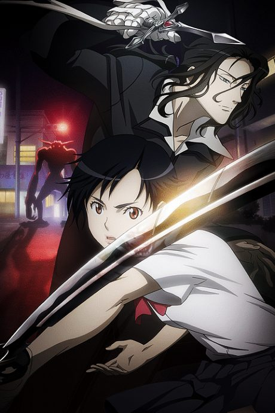

Blood+
BLOOD+
Saya is a high school girl with no memories of her past. Handed a sword, she learns she's the only one who can stop blood-drinking monsters called Chiropterans.
An original anime, so there's no book to continue with.
7.3AniList score
—Animeter, no votes yet
50episodes
Rate it or report where you stopped
Is there a manga to continue?
StatusOriginal
An anime original, so there is no manga to pick up from.
Sources: AniList, MyAnimeList